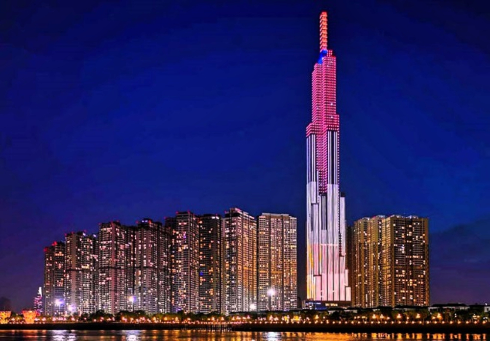

Huế
Huế là một thành phố trực thuộc tỉnh Thừa Thiên Huế, Việt Nam. Huế từng là kinh đô (cổ đô Huế) của Việt Nam thời phong kiến dưới triều Tây Sơn (1788-1801) và nhà Nguyễn (1802 1945). Hiện nay, thành phố là một trong những trung tâm về văn hoá – du lịch, y tế chuyên sâu, giáo dục đào tạo, khoa học công nghệ của Miền Trung - Tây Nguyên và cả nước. Những địa danh nổi bật là sông Hương và những di sản để lại của triều đại phong kiến. Thành phổ có năm danh hiệu UNESCO ở Việt Nam. Quần thể Di tích Cố đô Huế (1993), Nhã nhạc cung đình Huế (2003). Mộc bản triều Nguyễn (2009), Châu bản triều Nguyễn (2014) và Hệ thống thơ văn trên kiến trúc cung đình Huế (2016). Ngoài ra, Huế còn là một trong những địa phương có di sản hát bài chòi đã được công nhận là di sản văn hóa phi vật thể của nhân loại

Sài Gòn
Có thể nói Sài Gòn – TPHCM là thành phố sông nước, gồm có các sông Sài gòn, Đồng Nai, Nhà Bè hiền hòa với 11 kênh rạch tỏa vào thành phố và rừng ngập mặn Cần Giờ vv Hai con sông là sông Đồng Nai và sông Sài Gòn, gặp nhau ở trung tâm thành phố tại các đoạn sông Nhà Bè và Soài Rạp, tổng chiều dài 80km. Từ những con sông này tỏa vào thành phố 11 con kênh, tổng chiều dài kênh rạch lên tới 700km. Diện tích kênh rạch nổi thành khoảng 835ha, hầu hết tập trung vào phía Nam và Đông thành phố. Chính hệ thống kênh răch chằng chịt này trước đây nổi với mạng lưới sông rặch của ĐBSCL tạo nên một mạng lưới đường thủy thuận lợi cho việc thiết lập các bến bãi giao thương hàng hóa làm tiền đề cho việc hình thành một đô thị sông nước và chính sự ưu việt của đường thủy lộ và kênh rạch xưa đã trở thành trung tâm hoạt động của đô thị.
Hà Nội
Năm 2019, Hà Nội là đơn vị hành chính Việt Nam xếp thứ 2 về Tổng sản phẩm trên địa bàn (GRDP), xếp thứ 8 về GRDP bình quân đầu người, đứng thứ 41 về tốc độ tăng trưởng GRDP GRDP đạt 971.700 tỉ Đồng (tương ứng với 41,85 tỉ USD), GRDP bình quân đầu người đạt 120,6 triệu đồng (tương ứng với 5200 USD), tốc độ tăng trưởng GRDP dat 7,62%.[6] Quy mô GRDP năm 2020 theo giá hiện hành ước đạt 1.016 nghìn tỷ đồng (xếp thứ hai các tỉnh thành cả nước); GRDP bình quân đầu người đạt 122,7 triệu đồng (tương đương 5.285 USD) (xếp thứ 7 các tỉnh thành cả nước), GRDP theo giá so sánh năm 2010 ước tăng 3,94% - cao gấp khoảng 1,5 lần mức tăng của cả nước (xếp 26/63 các tỉnh thành) (báo cáo của địa phương. Tổng cục Thống kê sẽ công bố số liêu đánh giá lại)[7]. Thu nhập bình quân đầu người sơ bộ năm 2019 là 6,403 triệu đồng / tháng (xếp 3/63 tỉnh thành).